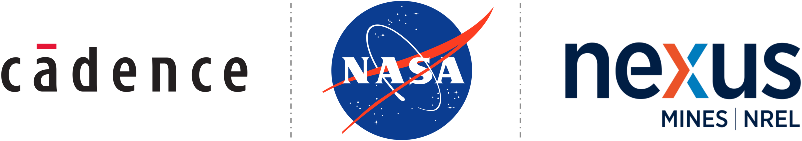

The Phal Lab is an interdisciplinary research group that integrates engineering, optics, and data science to advance optical technologies for a wide range of applications. We are actively seeking motivated graduate students to join our team and contribute to innovative, cutting-edge projects. If you are interested in pursuing interdisciplinary research and exploring novel technological solutions, please reach out to yphal@mines.edu!